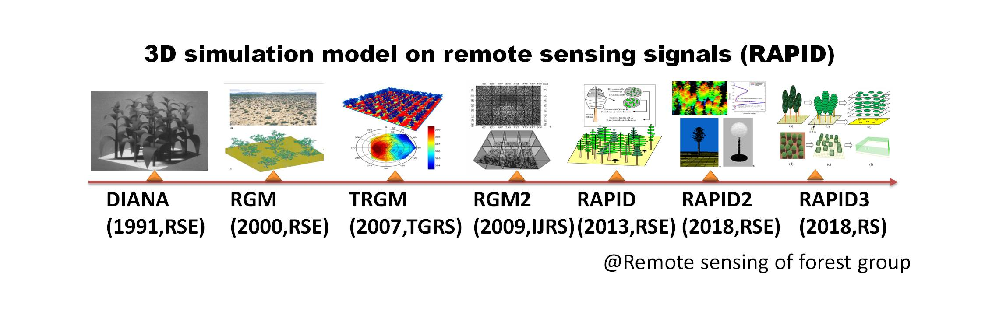
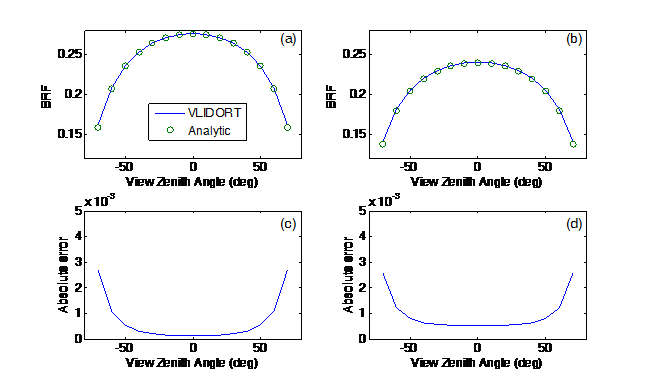

（1）模型发展历史：
面向孔隙目标的辐射度模型RAPID（Radiosity Applicable to Porous IndiviDual objects）是在RGM（Radiosity-Graphics Model）模型（Qin and Gerstl, 2000）和TRGM模型（Liu et al., 2007）的基础上开发的三维计算机模拟模型，它通过计算机图形学思想构建，以三维场景为基础，进行逼近真实的光学辐射传输模拟（Huang et al., 2013）。RAPID从合理简化植被三维结构入手，极大地降低了三维场景大小，显著减少了辐射度计算对内存的需求，使其能应对大场景模拟需求，大幅提高了大场景辐射传输模拟效率。随后，经过不断完善和扩展，RAPID已经成为国际上首个在相同场景下支持光学、热红外、激光雷达和微波后向散射的全波段多传感器免费模拟平台（Huang et al., 2018）。在尺度上也具有很强的伸缩性，既可以用于精细小场景，也可以用于样地尺度和景观尺度，均具有良好的模拟效率。 目前最新版本为RAPID3。

（2）模型主要模块：
RAPID 的内核是一套Fortran为主，和C语言混编的DOS 程序，但是界面采用Visual studio MFC 编制，方便用户使用。软件界面的主要功能是加载输入文件（input files）和执行用户设定的场景模拟或视觉观看效果。以热红外波段模拟为例，模型主要包含四个主要部分：a)冠层真实结构产生模块；b)单次散射模块；c)多次散射模块；d)方向亮温模块。
RAPID输入文件 输入文件并没有集成到一个大的配置文件中去。而是分成了几个单独的文件来定义不同的信息。主输入文件包括：POLY.IN，REF.IN，OPTICS.IN，VIEWBIDIR.DAT 和TC.IN。
POLY.IN（三维结构文件）：POLY.IN 是RAPID运行的重要文件之一。它存储了大量的三角形和矩形的坐标和颜色信息。每个三角形或矩形代表了植被、土壤或其它对象。文件描述的具体信息包括：场景的长宽度、所储存的多边形数量、每个多边形面元的属性（顶点数，红光反射透射率，绿光反射透射率，蓝光反射透射率，叶面积指数，是否针叶，多边形半径，多边形的厚度，叶片大小，多边形每个顶点的(x, y, z)坐标）。
REF.IN（太阳和天空光文件）：该文件记录了太阳的位置和天空不同方向的入射光信息。
OPTICS.IN（组分光谱文件）：记录了在POLY.IN 文件中所有组件的反射率和透射率。
TC.IN（组分温度文件）：该文件存储了不同分层的叶片与土壤温度。这些温度可以手动分配，本研究中通过与ENVI-met模型的耦合获得。对每个组分而言，还区分其光照和阴影面温度。
VIEWBIDIR.DAT（传感器文件）：定义传感器的视场角（FOV）、观测高度和土壤BRDF 选项。观测高度为0，表示卫星；否则为地面或者空中观测。它以常见的卫星传感器或塔基镜头为参考，集成了典型的波谱数据。包括GeoEye/QuickBird/SPOT卫星的可见光（RGB）与近红外波段，Worldview-2卫星的8个波段，CHRISW卫星的18个波段，Landsat-8卫星的可见光（RGB）、近红外与热红外波段。除此之外，用户还可自定义波谱文件。
RAPID输出文件 模拟结果包括几个临时输出文件和最终文件。临时文件在各模块之间共享，我们主要关注最终文件，它包括求解之后的辐射度文件（RADFLUX.DAT，SELFFLUX.DAT等），BRF（BRF *.DAT）和DBT（DRT *.DAT）。 RADFLUX.DAT文件用来存储多次散射后最终的辐射亮度值。还有其他三个格式一样，但是不同结果的辐射度值，分别为SCATTERFLUX.DAT（多次散射贡献）、SELFFLUX.DAT（单次散射值）和SPECULARFLUX.DAT（镜面散射值）。 BRF_MULTI.DAT文件存储了所有波段、各方向上的最终的BRF 数据。同样，BRF_SINGLE.DAT存储了所有波段、各个方向上的单次散射BRF 值。 DRT_MULTI.DAT文件存储了各个方向上热红外波段的亮度温度值。
模型主界面为大型场景交互式编辑方式。打开软件使用菜单工具可以创建新场景或打开旧场景。由用户自定义场景大小、坡度与高程范围。在建模界面右侧选择土地覆盖类型，有植被（椭球体树冠、圆锥体树冠或作物）、道路、裸地、建筑和水体，可以对各类地物属性进行自定义，选中类型图标之后直接在界面左侧进行场景绘制。 场景建立完毕转入模型运行部分，软件自行生成场景三维结构视图。之后输入模拟控制参数，场景所在地区经纬度、模拟时刻、传感器类型、传感器高度、FOV等，输入后由模型自动生成相关文件。参数设置完毕进入模拟控制界面，选择相关模拟类型，如分辨率大小、是否分子场景、热辐射模拟、BRF、单次散射、激光雷达和卫星图像等。 模拟完成后，可由模型自带的BRF View界面查看各波段的BRF曲线。生成的高分辨率图像可用遥感图像处理软件ENVI打开。

Basic concept of solid soil polygons, stem polyongs and porous crowns.

Library of tree species (broadleaf, needle-leaf, bamboo, grass etc.)

Huailai Site

RAMI pine forest

RAMI pine forest looking up

RAMI rotation forest

Virtual fractal forest

First, Create the Huailai 3D scene and solve light transfer.

Second, simulate optical image.

Third, simulate thermal image.


Fourth, simulate lidar point cloud and waveform.

Fifth, simulate fisheye image.
Last, simulate microwave backscattering image (not done yet).
【1】 点击菜单 DTM->scene size. 设置场景大小为 length 20, width 20, cellsize 1 m, elevation 0, and slope 0. 然后点击确定按钮 OK。
【2】在软件界面右边的树状列表中，展开 All components->Ellipse trees，意思是将要创建椭球树冠。
【3】找到并点击按钮 "New"，会在椭球树冠类别下面生成一个叶子节点，名为 "Ellipse tree1" ，树状结构为 All components->Ellipse trees->Ellipse tree1.
【4】点击这个节点 "Ellipse tree1"，在下方的属性编辑器中对树冠结构进行修改。具体修改冠幅（crown width），默认2.5米，现在修改为5 米，回车确认，然后点击按钮“Update”完成数据同步。
【5】将鼠标移向左边的制图区，选择一个位置（比如中央区域 x=10 m, y=10 m）单击鼠标左键，即可将一棵树（Ellipse tree1）种植在场景中。该树显示为一个绿色的椭圆。
【6】点击菜单“Save”或者工具栏保存图标，在弹出的对话框中，选择一个输出路径（D:\RAPID\test1\onetree.map），将场景保存为后缀为map的文件。
【7】点击菜单Prepare-> STEP 2 (or 工具栏图标 ②): 将map文件转化为RAPID模型需要的poly.in文件（自动生成在工作目录下：D:\RAPID\test1\poly.in），并配套生成默认的ref.in, optics.cat和optics.in等文件。
【1】点击菜单 View->3D Viewer (D) (或者工具栏按钮 )，启动可视化程序 RGMDisp.exe。
【2】在RGMDisp.exe的界面中, 点击菜单 project->open scene (or 工具栏打开按钮)，选择文件 D:\RAPID\test1\poly.in。
【3】用鼠标进行场景的旋转，用上下方向键缩放，用工具栏中的三个图标调整线划图和填充图等显示模式。
【1】点击菜单Prepare-> STEP 3 (or 工具栏图标 3): 弹出对话框Input parameters，主要有两个子窗口Create raw files和Refine files，分别用于提供参数生成主要输入文件和修改这些文件。

【2】点击Create raw files下的Apply按钮，直接生成默认文件。默认模拟RGB+NIR四波段反射率产品。然后，点击Close按钮退出。
【1】点击菜单Run-> Go-64bit (or 工具栏图标 64bit): 弹出64位机器上运行的对话框Run RAPID，其窗口左边为运行选项，右边为运行实时结果输出界面。通过勾选左下方的选项，可以执行需要的模拟任务。默认主要任务是模拟BRF and DBT。通过勾选liar可以模拟大光斑激光雷达波形；勾选TIR可以模拟热红外；勾选radar可以模拟后向散射系数；勾选imaging可以模拟遥感图像；勾选Fisheye可以模拟鱼眼图像。

【2】点击RUN按钮即可运行模型，STOP按钮用于强制停止当前模拟，EXIT退出该窗口。勾选Show Processing可以看到更多的运行动态数据。
【1】模拟结果都保存在工作目录下（D:\RAPID\test1）。主要文件为brf*.dat，其中brf_multi.dat（或者早期版本brf.dat）为场景总的BRF；brf01.dat为土壤组分BRF；brf02.dat为叶片组分BRF；brf03.dat为树干组分BRF；对应的fari*.dat为相应组分的可视比例；对应的refl*.dat为相应组分的等效反射率。radflux.dat为多次散射求解后的每个多边形的辐射度；selfflux.dat为单次散射辐射出射度。
【2】最直接的查看方式，是通过记事本或者写字本，或者EltraEdit等软件直接打开上述dat文件查看结果。然后拷贝到Excel中绘制BRF曲线。
【3】可视化的查看方式，是通过RGMDisp.exe进行渲染。具体点击菜单 View->3D Viewer (D) (或者工具栏按钮 )，启动可视化程序 RGMDisp.exe。 然后open工作目录下的poly.in。点击菜单Display，选择下面的各种Draw功能（比如Draw single scattering显示selfflux.dat效果）进行体验。

2.1 主要步骤：
大气模型耦合需要RAPID和V-lidort模型耦合。其中vlidort模型表现为vlidort.exe。模拟分为三个步骤：
【1】配置VLIDORT模型的四个关键文件：2p7_VLIDORT_ReadInput.cfg, VBRDF_LutInput.cfg, input_atmos.dat和input_temp23.dat。一般使用软件默认值文件即可。
【2】在RAPID模型界面（Input parameters）里面选择大气模型为vlidort，填写气溶胶光学厚度，即可在Apply时调用vlidort，生成地表BRDF所需的若干角度文件（VIEWBIDIR_DBKERNEL_1.dat等）和aerosol.in文件。具体角度文件包五大类：
[2.1] VIEWBIDIR_DBKERNEL_1 到 15：直射光在太阳主平面的角度，-70度到70度，每隔10度。DBOUNCE_BRDFUNC(s, a, b): incident solar angle s, reflected line-of-sight angle a, and relative azimuth b.
[2.2] VIEWBIDIR_USER_BRDFUNC_0_1：用户定义的观测角度，VLIDORT文档中为USER_BRDF_F_0 (s, a): incident solar angle s and reflected view zenith angle a.
[2.3] VIEWBIDIR_BRDFUNC_0_1到0_4：天空半球剖分的200个角度。BRDF_F_0(s, k): incident solar angle s and reflected discrete ordinate k.
[2.4]VIEWBIDIR_BRDFUNC_1到10：200个角度。BRDF_F_0(s, k): incident solar angle s and reflected discrete ordinate k.
[2.5]VIEWBIDIR_USER_BRDFUNC_1到10：USER_BRDF_F_0 (s, a): incident solar angle s and reflected view zenith angle a.
aerosol.in文件只有一行，两个数字：气溶胶类型，气溶胶光学厚度。
如果用命令行方式：调用vlidort.exe pre
【3】按照【2】的数据需求，构建一个批处理文件，不断运行RAPID模型计算2.1到2.5的五大类地表BRDF。以太阳天顶角为20为例，构建hotspot.bat文件如下：
ref64 inf -size 1024
mer64
ref64 inf -size 1024 spec -sza 20.00
sol64 -sza 20.00
ref64 inf -size 1024 bidir -sza 20.00 -file VIEWBIDIR_DBKERNEL_1.dat
ref64 inf -size 1024 spec -sza 15
sol64 -sza 15
ref64 inf -size 1024 bidir -sza 15 -file VIEWBIDIR_USER_BRDFUNC_0_1.dat
ref64 inf -size 1024 spec -sza 20.00
sol64 -sza 20.00
ref64 inf -size 1024 bidir -sza 20.00 -file VIEWBIDIR_DBKERNEL_2.dat
ref64 inf -size 1024 spec -sza 17
sol64 -sza 17
ref64 inf -size 1024 bidir -sza 17 -file VIEWBIDIR_USER_BRDFUNC_0_2.dat
ref64 inf -size 1024 spec -sza 20.00
sol64 -sza 20.00
ref64 inf -size 1024 bidir -sza 20.00 -file VIEWBIDIR_DBKERNEL_3.dat
ref64 inf -size 1024 spec -sza 19
sol64 -sza 19
ref64 inf -size 1024 bidir -sza 19 -file VIEWBIDIR_USER_BRDFUNC_0_3.dat
ref64 inf -size 1024 spec -sza 20.00
sol64 -sza 20.00
ref64 inf -size 1024 bidir -sza 20.00 -file VIEWBIDIR_DBKERNEL_4.dat
ref64 inf -size 1024 spec -sza 20
sol64 -sza 20
ref64 inf -size 1024 bidir -sza 20 -file VIEWBIDIR_USER_BRDFUNC_0_4.dat
ref64 inf -size 1024 spec -sza 20.00
sol64 -sza 20.00
ref64 inf -size 1024 bidir -sza 20.00 -file VIEWBIDIR_DBKERNEL_5.dat
ref64 inf -size 1024 spec -sza 21
sol64 -sza 21
ref64 inf -size 1024 bidir -sza 21 -file VIEWBIDIR_USER_BRDFUNC_0_5.dat
ref64 inf -size 1024 spec -sza 20.00
sol64 -sza 20.00
ref64 inf -size 1024 bidir -sza 20.00 -file VIEWBIDIR_DBKERNEL_6.dat
ref64 inf -size 1024 spec -sza 23
sol64 -sza 23
ref64 inf -size 1024 bidir -sza 23 -file VIEWBIDIR_USER_BRDFUNC_0_6.dat
ref64 inf -size 1024 spec -sza 20.00
sol64 -sza 20.00
ref64 inf -size 1024 bidir -sza 20.00 -file VIEWBIDIR_DBKERNEL_7.dat
ref64 inf -size 1024 spec -sza 25
sol64 -sza 25
ref64 inf -size 1024 bidir -sza 25 -file VIEWBIDIR_USER_BRDFUNC_0_7.dat
ref64 inf -size 1024 spec -sza 20.00
sol64 -sza 20.00
ref64 inf -size 1024 bidir -sza 20.00 -file VIEWBIDIR_DBKERNEL_8.dat
ref64 inf -size 1024 spec -sza 30
sol64 -sza 30
ref64 inf -size 1024 bidir -sza 30 -file VIEWBIDIR_USER_BRDFUNC_0_8.dat
ref64 inf -size 1024 spec -sza 20.00
sol64 -sza 20.00
ref64 inf -size 1024 bidir -sza 20.00 -file VIEWBIDIR_DBKERNEL_9.dat
ref64 inf -size 1024 spec -sza 47
sol64 -sza 47
ref64 inf -size 1024 bidir -sza 47 -file VIEWBIDIR_USER_BRDFUNC_0_9.dat
ref64 inf -size 1024 spec -sza 20.00
sol64 -sza 20.00
ref64 inf -size 1024 bidir -sza 20.00 -file VIEWBIDIR_DBKERNEL_10.dat
ref64 inf -size 1024 spec -sza 49
sol64 -sza 49
ref64 inf -size 1024 bidir -sza 49 -file VIEWBIDIR_USER_BRDFUNC_0_10.dat
ref64 inf -size 1024 spec -sza 20.00
sol64 -sza 20.00
ref64 inf -size 1024 bidir -sza 20.00 -file VIEWBIDIR_DBKERNEL_11.dat
ref64 inf -size 1024 spec -sza 50
sol64 -sza 50
ref64 inf -size 1024 bidir -sza 50 -file VIEWBIDIR_USER_BRDFUNC_0_11.dat
ref64 inf -size 1024 spec -sza 20.00
sol64 -sza 20.00
ref64 inf -size 1024 bidir -sza 20.00 -file VIEWBIDIR_DBKERNEL_12.dat
ref64 inf -size 1024 spec -sza 51
sol64 -sza 51
ref64 inf -size 1024 bidir -sza 51 -file VIEWBIDIR_USER_BRDFUNC_0_12.dat
ref64 inf -size 1024 spec -sza 20.00
sol64 -sza 20.00
ref64 inf -size 1024 bidir -sza 20.00 -file VIEWBIDIR_DBKERNEL_13.dat
ref64 inf -size 1024 spec -sza 53
sol64 -sza 53
ref64 inf -size 1024 bidir -sza 53 -file VIEWBIDIR_USER_BRDFUNC_0_13.dat
ref64 inf -size 1024 spec -sza 20.00
sol64 -sza 20.00
ref64 inf -size 1024 bidir -sza 20.00 -file VIEWBIDIR_DBKERNEL_14.dat
ref64 inf -size 1024 spec -sza 55
sol64 -sza 55
ref64 inf -size 1024 bidir -sza 55 -file VIEWBIDIR_USER_BRDFUNC_0_14.dat
ref64 inf -size 1024 spec -sza 20.00
sol64 -sza 20.00
ref64 inf -size 1024 bidir -sza 20.00 -file VIEWBIDIR_DBKERNEL_15.dat
ref64 inf -size 1024 spec -sza 60
sol64 -sza 60
ref64 inf -size 1024 bidir -sza 60 -file VIEWBIDIR_USER_BRDFUNC_0_15.dat
ref64 inf -size 1024 spec -sza 89.25
sol64 -sza 89.25
ref64 inf -size 1024 bidir -sza 89.25 -file VIEWBIDIR_USER_BRDFUNC_1.dat
ref64 inf -size 1024 spec -sza 86.13
sol64 -sza 86.13
ref64 inf -size 1024 bidir -sza 86.13 -file VIEWBIDIR_USER_BRDFUNC_2.dat
ref64 inf -size 1024 spec -sza 80.78
sol64 -sza 80.78
ref64 inf -size 1024 bidir -sza 80.78 -file VIEWBIDIR_USER_BRDFUNC_3.dat
ref64 inf -size 1024 spec -sza 73.54
sol64 -sza 73.54
ref64 inf -size 1024 bidir -sza 73.54 -file VIEWBIDIR_USER_BRDFUNC_4.dat
ref64 inf -size 1024 spec -sza 64.81
sol64 -sza 64.81
ref64 inf -size 1024 bidir -sza 64.81 -file VIEWBIDIR_USER_BRDFUNC_5.dat
ref64 inf -size 1024 spec -sza 54.94
sol64 -sza 54.94
ref64 inf -size 1024 bidir -sza 54.94 -file VIEWBIDIR_USER_BRDFUNC_6.dat
ref64 inf -size 1024 spec -sza 44.22
sol64 -sza 44.22
ref64 inf -size 1024 bidir -sza 44.22 -file VIEWBIDIR_USER_BRDFUNC_7.dat
ref64 inf -size 1024 spec -sza 32.89
sol64 -sza 32.89
ref64 inf -size 1024 bidir -sza 32.89 -file VIEWBIDIR_USER_BRDFUNC_8.dat
ref64 inf -size 1024 spec -sza 21.17
sol64 -sza 21.17
ref64 inf -size 1024 bidir -sza 21.17 -file VIEWBIDIR_USER_BRDFUNC_9.dat
ref64 inf -size 1024 spec -sza 9.27
sol64 -sza 9.27
ref64 inf -size 1024 bidir -sza 9.27 -file VIEWBIDIR_USER_BRDFUNC_10.dat
【4】执行完毕第三步后，会出现VLIDORT所需的地表BRDF数据集，接着执行VLIDORT模型即可输出考虑的BRDF数值。
以工作目录 Aerosol\HOM_dense\20为例，可以将上述三个步骤写入到一个DOS批处理文件中：
copy /Y 2p7_VLIDORT_ReadInput_20.cfg Aerosol\HOM_dense\20\2p7_VLIDORT_ReadInput.cfg
copy /Y VBRDF_LutInput_20.cfg Aerosol\HOM_dense\20\VBRDF_LutInput.cfg
copy /Y hotspot20_dense.bat Aerosol\HOM_dense\20\hotspot.bat
copy /Y vlidort2.exe Aerosol\HOM_dense\20\vlidort2.exe
copy /Y aerosol11.in Aerosol\HOM_dense\20\aerosol.in
cd Aerosol\HOM_dense\20\
vlidort.exe pre
hotspot.bat
vlidort.exe
【5】查看模拟结果：目前只有两个输出文件，results_brdfplus_out1.txt（红光）和results_brdfplus_out2.txt（近红外），分别是大气层顶（Level 34 km）和层底（Level 0 km）在不同观测角度（Geometry）的上下行辐射。其中第五列数据为大气层顶上行Radiance,可以通过归一化太阳入射(如20度)转换为BRF：
BRFvlidort = RT_VLIDORT(:,5)*pi/cos(20/180*pi);
一个案例如下：
Level/Output, Geometry, TS_stokes (up, down), DBounce_BRDF
0.000000000000000 1 70.0000000000000 0.000000000000000 4.139698377884619E-002 0.000000000000000 3.157000000000000E-002
0.000000000000000 2 60.0000000000000 0.000000000000000 3.236583873811853E-002 0.000000000000000 4.052000000000000E-002
0.000000000000000 3 50.0000000000000 0.000000000000000 2.938779468035125E-002 0.000000000000000 5.605000000000000E-002
0.000000000000000 4 40.0000000000000 0.000000000000000 2.892962945196362E-002 0.000000000000000 6.907000000000001E-002
0.000000000000000 5 30.0000000000000 0.000000000000000 2.970106429368309E-002 0.000000000000000 8.117000000000001E-002
0.000000000000000 6 20.0000000000000 0.000000000000000 3.095597439821184E-002 0.000000000000000 9.178000000000001E-002
0.000000000000000 7 10.0000000000000 0.000000000000000 3.228235312807796E-002 0.000000000000000 0.100200000000000
0.000000000000000 8 1.00000000000000 0.000000000000000 3.250845013352362E-002 0.000000000000000 0.107700000000000
0.000000000000000 9 10.0000000000000 180.000000000000 3.478137157809898E-002 0.000000000000000 0.114800000000000
0.000000000000000 10 20.0000000000000 180.000000000000 3.652355662691645E-002 0.000000000000000 0.128200000000000
0.000000000000000 11 30.0000000000000 180.000000000000 3.433067592882250E-002 0.000000000000000 0.109600000000000
0.000000000000000 12 40.0000000000000 180.000000000000 3.293580155830215E-002 0.000000000000000 9.775000000000000E-002
0.000000000000000 13 50.0000000000000 180.000000000000 3.117189836575358E-002 0.000000000000000 7.987000000000000E-002
0.000000000000000 14 60.0000000000000 180.000000000000 3.019334846316788E-002 0.000000000000000 5.908000000000000E-002
0.000000000000000 15 70.0000000000000 180.000000000000 3.204296566668410E-002 0.000000000000000 3.900000000000000E-002
34.0000000000000 1 70.0000000000000 0.000000000000000 1.042263910995895E-002 8.451212213112594E-002 3.157000000000000E-002
34.0000000000000 2 60.0000000000000 0.000000000000000 1.313291672756625E-002 9.589280961267308E-002 4.052000000000000E-002
34.0000000000000 3 50.0000000000000 0.000000000000000 1.706070083173341E-002 0.133890480711280 5.605000000000000E-002
34.0000000000000 4 40.0000000000000 0.000000000000000 2.027413925704747E-002 0.231665487874904 6.907000000000001E-002
34.0000000000000 5 30.0000000000000 0.000000000000000 2.316170470818002E-002 0.460053153157133 8.117000000000001E-002
34.0000000000000 6 20.0000000000000 0.000000000000000 2.566862950008229E-002 0.664506778242466 9.178000000000001E-002
34.0000000000000 7 10.0000000000000 0.000000000000000 2.771875814965746E-002 0.413590827352392 0.100200000000000
34.0000000000000 8 1.00000000000000 0.000000000000000 2.785321303794205E-002 0.199184930312660 0.107700000000000
34.0000000000000 9 10.0000000000000 180.000000000000 3.104663722930473E-002 9.111591705444461E-002 0.114800000000000
34.0000000000000 10 20.0000000000000 180.000000000000 3.359126995970321E-002 5.349915463210418E-002 0.128200000000000
34.0000000000000 11 30.0000000000000 180.000000000000 2.995665372555962E-002 3.663414339175187E-002 0.109600000000000
34.0000000000000 12 40.0000000000000 180.000000000000 2.739418797213769E-002 2.877187642667495E-002 9.775000000000000E-002
34.0000000000000 13 50.0000000000000 180.000000000000 2.331175291546405E-002 2.573277965339820E-002 7.987000000000000E-002
34.0000000000000 14 60.0000000000000 180.000000000000 1.811863222828699E-002 2.626059084016453E-002 5.908000000000000E-002
34.0000000000000 15 70.0000000000000 180.000000000000 1.266681849226738E-002 3.057390157266330E-002 3.900000000000000E-002
2.2 完全吸收的大气模拟效果：
我们设置一个纯粹吸收性的大气 (transmittance Tabs=0.75, α= 0), 地表反射率 ρground, 太阳入射方向 Ωs 和观测方向 Ωv. 理论上, 可以通过解析模型计算大气层顶单次散射BRF（BRFTOA）:
(1)
下图显示了解析BRFTOA 和 VLIDORT模拟比较， 误差小于 0.003.

热红外模拟目前有三个组分温度输入方式：
（1）扩展CUPID模型模拟作物分层分角度分时段温度；目前已经集成到系统中。
（2）ENVI-met三维模型模拟景观温度场；这个需要线下模拟。
（3）基于能量平衡的三维温度场自动估算；这个功能尚待集成。
无论哪种方式，只要将温度输入到tc.in文件中即可实现组分温度输入，比如tc.in中包含内容为：
3 2 1.0 （三个组分，两层，放大系数1.0）
layer 1 2 （两层的编号）
leaf （第一个组分叶片）
28 28 （光照温度，第一层，第二层）
26 26 （阴影温度，第一层，第二层）
stem （第二个组分茎干）
28 28 （光照温度，第一层，第二层）
24 24 （阴影温度，第一层，第二层）
soil（第三个组分土壤）
37 37 （光照温度，第一层，第二层）
31 31 （阴影温度，第一层，第二层）
【1】 点击菜单 DTM->scene size. 设置场景大小为 length 10, width 10, cellsize 1 m, elevation 0, and slope 0. 然后点击确定按钮 OK。
【2】在软件界面右边的树状列表中，展开 All components->Rectangle crowns，意思是将要创建长方体的作物冠层。
【3】找到并点击按钮 "New"，会在作物冠层类别下面生成一个叶子节点，名为 "Rectangle crowns1" ，树状结构为 All components->Rectangle crowns->Rectangle crowns1.
【4】点击这个节点 "Rectangle crowns1"，在下方的属性编辑器中对冠型结构进行修改。具体修改冠幅（crown width），默认3米，现在修改为2米;高度改为2米，回车确认，然后点击按钮“Update”完成数据同步。
【5】将鼠标移向左边的制图区，选择一个位置（x=2 m, y=1 m）单击鼠标左键，即可将一株/群（Rectangle crowns1）种植在场景中，该植株显示为一个绿色的正方形。然后，向下每隔2米依次种一株，共计5株，形成一条垄行。点击工具栏选择按钮，选中这个垄行，然后点击复制按钮，再点击粘贴按钮，即可复制这个垄行，然后拖拽至另外一个垄行位置。拖拽需要提前点击工具栏上一个三角形箭头图案的按钮。最后，右键取消选择。
【6】点击菜单“Save”或者工具栏保存图标，在弹出的对话框中，选择一个输出路径（D:\RAPID\test3\rowcrop.map），将场景保存为后缀为map的文件。
【7】点击菜单Prepare-> STEP 2 (or 工具栏图标 ②): 将map文件转化为RAPID模型需要的poly.in文件（自动生成在工作目录下：D:\RAPID\test3\poly.in），并配套生成默认的ref.in, optics.cat和optics.in等文件。
【1】点击菜单 View->3D Viewer (D) (或者工具栏按钮 )，启动可视化程序 RGMDisp.exe。
【2】在RGMDisp.exe的界面中, 点击菜单 project->open scene (or 工具栏打开按钮)，选择文件 D:\RAPID\test3\poly.in。
【3】用鼠标进行场景的旋转，用上下方向键缩放，用工具栏中的三个图标调整线划图和填充图等显示模式，观察是否是行播场景。
【1】点击菜单Prepare-> STEP 3 (or 工具栏图标 3): 弹出对话框Input parameters，主要有两个子窗口Create raw files和Refine files，分别用于提供参数生成主要输入文件和修改这些文件。在sensor type中选择VNIR+TIR/Landsat-8 (RGB+NIR+TIR）类型才能模拟热红外。

【2】点击Create raw files下的Apply按钮，直接生成默认文件。切换到Refine files子窗口，点击tc.in可以编辑组分温度。然后，点击Close按钮退出。

【1】点击菜单Run-> Go-64bit (or 工具栏图标 64bit): 弹出64位机器上运行的对话框Run RAPID，其窗口左边为运行选项，右边为运行实时结果输出界面。一定要勾选run TIR(tc.in)才可以模拟热红外；勾选Infinite scene用于模拟无限场景。

【2】点击RUN按钮即可运行模型，STOP按钮用于强制停止当前模拟，EXIT退出该窗口。勾选Show Processing可以看到更多的运行动态数据。
【1】模拟结果都保存在工作目录下（D:\RAPID\test3）。热红外的主要文件为drt*.dat，其中drt_multi.dat（或者早期版本drt.dat）为场景总的方向亮度温度和辐射度。

【2】最直接的查看方式，是通过记事本或者写字本，或者EltraEdit等软件直接打开上述dat文件查看结果。然后拷贝到Excel中绘制DBT曲线。
【3】和BRF类似，也可以用可视化的查看方式（RGMDisp.exe）。具体点击菜单 View->3D Viewer (D) (或者工具栏按钮 )，启动可视化程序 RGMDisp.exe。 然后open工作目录下的poly.in。点击菜单Display，选择下面的各种Draw功能（比如Draw single scattering显示selfflux.dat效果）进行体验。
lidar波形模拟，最早用于GLAS大光斑波形模拟，主要程序为lidar64.exe。所需的输入信息包括光斑大小，入射角度，脉冲宽度FWHM。后来经过调整，也可以模拟小光斑离散回波。由于lidar的入射和接收方向重合，为热点方向，所以直接调用ref.in中的太阳位置作为入射角度，并需要光学直射模拟图像s0.raw （还有z0.raw, c0.raw分别记录z缓冲和组分类别）作为基础数据。
模拟的命令行参数为： lidar64.exe -foot 15.0 -space 70.0 -FWHM 4.0 sgl
其中-foot表示光斑半径大小，-space表示光斑之间的采样间隔，-FWHM表示脉冲宽度，sgl表示只模拟单次散射。
如果只是模拟单次散射，速度较快。在Run RAPID对话框中输入：
ref64 spec -size 2000
lidar64.exe -foot 15.0 -space 70.0 -FWHM 4.0 sgl
如果需要模拟多次散射，那么还需要计算形状因子等：
ref64 -size 2000
mer64
ref64 spec -size 2000
sol64
lidar64.exe -foot 15.0 -space 70.0 -FWHM 4.0 sgl
【1】 点击菜单 DTM->scene size. 设置场景大小为 length 20, width 20, cellsize 1 m, elevation 0, and slope 0. 然后点击确定按钮 OK。
【2】在软件界面右边的树状列表中，展开 All components->Cone+Cylinder trees，意思是将要创建圆锥+圆柱的组合单木。
【3】找到并点击按钮 "New"，会在针叶冠层类别下面生成一个叶子节点，名为 "Cone+Cylinder tree1" ，树状结构为 All components->Cone+Cylinder trees->Cone+Cylinder tree1.
【4】点击这个节点 "Cone+Cylinder tree1"，在下方的属性编辑器中对冠型结构进行修改。具体修改Height30米，Crown Length 20米，Cone Length为2米，LAI 6，回车确认，然后点击按钮“Update”完成数据同步。
【5】将鼠标移向左边的制图区，随机种植5棵（不同位置单击鼠标左键五次），每个植株显示为一个深绿色的椭圆。
【6】点击菜单“Save”或者工具栏保存图标，在弹出的对话框中，选择一个输出路径（D:\RAPID\test4\lidartree.map），将场景保存为后缀为map的文件。
【7】点击菜单Prepare-> STEP 2 (or 工具栏图标 ②): 将map文件转化为RAPID模型需要的poly.in文件（自动生成在工作目录下：D:\RAPID\test4\poly.in），并配套生成默认的ref.in, optics.cat和optics.in等文件。
【1】点击菜单 View->3D Viewer (D) (或者工具栏按钮 )，启动可视化程序 RGMDisp.exe。
【2】在RGMDisp.exe的界面中, 点击菜单 project->open scene (or 工具栏打开按钮)，选择文件 D:\RAPID\test4\poly.in。
【3】用鼠标进行场景的旋转，用上下方向键缩放，用工具栏中的三个图标调整线划图和填充图等显示模式，观察是否为圆锥+圆柱形状的林木组成的五棵树。
【1】点击菜单Prepare-> STEP 3 (or 工具栏图标 3): 弹出对话框Input parameters，主要有两个子窗口Create raw files和Refine files，分别用于提供参数生成主要输入文件和修改这些文件。在sensor type中选择 (RGB+NIR）类型即可，因为目前最多支持四个波段模拟。
【2】点击Create raw files下的Apply按钮，直接生成默认文件。切换到Refine files子窗口，点击ref.in编辑第一行两个角度（入射天顶角和方位角）。然后，点击Close按钮退出。

【1】点击菜单Run-> Go-64bit (or 工具栏图标 64bit): 弹出64位机器上运行的对话框Run RAPID，其窗口左边为运行选项，右边为运行实时结果输出界面。一定要勾选run lidar才可以模拟lidar。然后直接修改命令行为：
ref64 spec -size 2000
lidar64.exe -foot 15.0 -FWHM 4.0 sgl
【2】点击RUN按钮即可运行模型，STOP按钮用于强制停止当前模拟，EXIT退出该窗口。勾选Show Processing可以看到更多的运行动态数据。
模拟结果都保存在工作目录下（D:\RAPID\test4）。Lidar的主要文件为waveform_sgl.dat或者waveform_multi.dat，记录了场景的波形。通过记事本或者写字本，或者EltraEdit等软件直接打开上述dat文件查看结果。然后拷贝到Excel中绘制波形曲线。

Lidar点云模拟方式有两种：（1）lidar64.exe选择小光斑参数输出离散点云；（2）img64.exe选择点云输出。这里只介绍第二种。
img64主要用于提供各类图像生成，主要命令行参数包括：
-inf -- 启动场景复制功能，实现无限大场景模拟
-infsize --场景复制宽度或者sqrt(次数)，默认100，即x方向左边复制100次，右边复制100次；y方向上下各复制100次。
-fish -- 启动鱼眼180度广角传感器模拟，结果存储在fishview.img(fishview.hdr)中。
-mid --只模拟场景正中间 1/3的区域，主要是为了后面的子场景模拟和拼接
-reso 0.5-- 设置模拟的空间分辨率（默认 0.5 m）
-look zen azim -- 特定观测方向绘制场景
-air -- 启动机载推扫传感器模拟，结果存储在airview.img(airview.hdr)中。
为了明确传感器的位置（x,y,z）和朝向（zen,azim），需要一个Camera.in文件提供信息。文件只有一行： x y z zen azim。当zen在90和180度之间时，表示传感器朝上看，比如地面LAI观测和地基lidar扫描；0到90度时，是常规遥感的对地观测模式。比如，
表示在坐标（4,4,0.01）处垂直向上看的传感器。
如果既不启动fish，也不启动air，则直接模拟平行投影，模拟观测天顶角和方位角与viewbidir.dat一致，会输出不同角度的图像，存储为refl*.img，可以用ENVI直接读取。
为了模拟点云，需要启动fish或者air。模拟点云保存在pointcloud_air.txt（机载单线推扫）或者pointcloud.txt（单点360度扫描，一般是地基lidar）文件中。典型命令行如：
img64.exe -f -reso 0.5 -size 3000 air
模拟点云的同时，多波段的airview.img或者fishview.img也会同时产生。
【1】 点击菜单 DTM->scene size. 设置场景大小为 length 20, width 20, cellsize 1 m, elevation 0, and slope 0. 然后点击确定按钮 OK。
【2】在软件界面右边的树状列表中，展开 All components->Ellipse trees，意思是将要创建椭球体的单木。
【3】找到并点击按钮 "New"，会在椭球冠层类别下面生成一个叶子节点，名为 "Ellipse tree1" ，树状结构为 All components->Ellipse trees->Ellipse tree1.
【4】点击这个节点 "Ellipse tree1"，在下方的属性编辑器中对冠型结构进行修改。具体修改3D tree model下拉列表从默认值0改为9（T_Betula pendula）调整Height 10米，Crown width 4米，回车确认，然后点击按钮“Update”完成数据同步。

【5】将鼠标移向左边的制图区，种植1棵（单击鼠标左键1次），植株显示为一个浅绿色的椭圆。
【6】点击菜单“Save”或者工具栏保存图标，在弹出的对话框中，选择一个输出路径（D:\RAPID\test5\imagetest.map），将场景保存为后缀为map的文件。
【7】点击菜单Prepare-> STEP 2 (or 工具栏图标 ②): 将map文件转化为RAPID模型需要的poly.in文件（自动生成在工作目录下：D:\RAPID\test5\poly.in），并配套生成默认的ref.in, optics.cat和optics.in等文件。
【1】点击菜单 View->3D Viewer (D) (或者工具栏按钮 )，启动可视化程序 RGMDisp.exe。
【2】在RGMDisp.exe的界面中, 点击菜单 project->open scene (or 工具栏打开按钮)，选择文件 D:\RAPID\test5\poly.in。
【3】用鼠标进行场景的旋转，用上下方向键缩放，用工具栏中的三个图标调整线划图和填充图等显示模式，观察是否为真实结构林木。

【1】点击菜单Prepare-> STEP 3 (or 工具栏图标 3): 弹出对话框Input parameters，主要有两个子窗口Create raw files和Refine files，分别用于提供参数生成主要输入文件和修改这些文件。在sensor type中选择 (RGB+NIR）类型即可。
【2】点击Create raw files下的Apply按钮，直接生成默认文件。切换到Refine files子窗口，点击camera.in编辑第一行两个角度（入射天顶角和方位角）。然后，点击Close按钮退出。

【1】点击菜单Run-> Go-64bit (or 工具栏图标 64bit): 弹出64位机器上运行的对话框Run RAPID，其窗口左边为运行选项，右边为运行实时结果输出界面。勾选run fisheye和run imaging。

【2】点击RUN按钮即可运行模型，STOP按钮用于强制停止当前模拟，EXIT退出该窗口。勾选Show Processing可以看到更多的运行动态数据。
成功运行后，可以模拟得到0.5米分辨率的平行投影的遥感图像（refl*.img），鱼眼图像（fishview.img）和地基点云（pointcloud.txt）。
【3】如果模拟机载推扫模式，需要将命令行最后一样改为：
img64 -air -reso 0.2 -size 2000
模拟结果都保存在工作目录下（D:\RAPID\test5）。平行投影的遥感图像（refl*.img）和鱼眼图像（fishview.img）可以用ENVI直接打开浏览。地基点云（pointcloud.txt）和机载点云（pointcloud_air.tx）通过记事本或者写字本，或者EltraEdit等软件直接打开查看结果。用CloudCompare可以可视化查看点云数据。
微波后向散射是RAPID2最具特色的部分，主要集中在radar64.exe中。模拟方式有两种：（1）无图像模式；（2）图像模式(含-img参数）。比如，
radar64.exe -size 3000 -img -reso 0.20
就是典型的图像模拟模式，模拟结果保存为radar_bX_vY.img形式，X表示第几个波段，Y表示viewbidir.dat中第几个观测角度。
无图像模式不加-img命令行选项即可，输出结果为：sigma_multi.dat和sigma_comp_multi.dat，存储了总的后向散射系数和各个组分的散射系数。
典型内容如下：
bandno Angle VV HH VH HV
1 60.0000 -21.5657 -19.8244 -35.8378 -35.3159
2 60.0000 -23.6837 -21.7896 -38.8723 -37.2386
3 60.0000 -27.8889 -25.8136 -43.1764 -41.3003
在微波波段，枝干的作用加强，介电常数也是新的变量。因此，需要额外定义两个文件：branch.in和microwave.in。其中，branch.in里包含和optics.cat中一样的组分，但是每个组分提供6个参数，分别是大枝条的密度（个/m3）、长度和直径；小纸条(twig)的密度、长度和直径。非孔隙目标，直接填写0即可。举例如下：
3 6 1 （三个组分，6个参数，放大系数1.0）
density1 length1 diameter1 density2 length2 diameter2
leaf00
1.000000 1.000000 3.000000 15.000000 0.300000 1.000000
stem00
0 0 0 0 0 0
Soil
0 0 0 0 0 0
为了定义微波的波段信息，需要新文件microwave.in保存波段和介电常数信息。每个组分给出三个波段的介电常数（实部第一行，虚部在第二行）。因为孔隙目标中即包含叶片，也包含枝条，两种的介电常数差异较大，所以前三列是叶片的，后三列是枝条的信息。举例如下：
3 3 1 （三个组分，3个波段，放大系数1.0）
wavelen 3 6.3 18.75 (1.6, 4.75, and 10 GHz)
leaf00
27.00 27.00 27.00 10.19 10.19 10.19
-12.43 -12.43 -12.43 -3.36 -3.36 -3.36
stem00
16.45 16.45 16.45 16.45 16.45 16.45
-7.31 -7.31 -7.31 -7.31 -7.31 -7.31
soil
8.458 8.458 8.458 8.458 8.458 8.458
-1.234 -1.234 -1.234 -1.234 -1.234 -1.234
可以看到，每个组分有两排数据，第一排是实部，第二排是虚部。前三列是叶片的介电常数，后三列是树枝的介电常数。
为了能够运行微波，需要先执行光学部分的一个程序，生成cat.rt和pnorm.dat, pcenter.dat等文件。比如，
ref64.exe -size 1024 spec
下面进行具体练习。
【1】 点击菜单 DTM->scene size. 设置场景大小为 length 60, width 60, cellsize 0.5 m, elevation 0, and slope 0. 然后点击确定按钮 OK。
【2】在软件界面右边的树状列表中，展开 All components->Ellipse trees，意思是将要创建椭球体的单木。
【3】找到并点击按钮 "New"，会在椭球冠层类别下面生成一个叶子节点，名为 "Ellipse tree1" ，树状结构为 All components->Ellipse trees->Ellipse tree1.
【4】点击这个节点 "Ellipse tree1"，在下方的属性编辑器中对冠型结构进行修改。这里修改很关键。具体修改Height 10米，Crown width 4米，Crown length 5米，DBH 25 cm，Leaf size 10 cm, leaf thickness 0.1 cm, Branch density 4.1, Branch length 0.75, Branch diameter 0.7, 回车确认，然后点击按钮“Update”完成数据同步。

【5】将鼠标移向左边的制图区，种植1棵（单击鼠标左键1次），植株显示为一个绿色的椭圆。
【6】在软件界面右边的树状列表中，展开 All components->Buildings，意思是将要创建建筑。
【7】找到并点击按钮 "New"，会在建筑冠层类别下面生成一个叶子节点，名为 "Building 1" ，树状结构为 All components->Buildings->Building 1.
【8】点击这个节点 "Building 1"，在下方的属性编辑器中对结构参数进行修改。这里修改很关键。具体修改Top Height 6米，width 6米，Building height 6米，Length 10 m，Azimuth 90 deg, 回车确认，然后点击按钮“Update”完成数据同步。

【9】点击菜单“Save”或者工具栏保存图标，在弹出的对话框中，选择一个输出路径（D:\RAPID\test6\microwave.map），将场景保存为后缀为map的文件。
【10】点击菜单Prepare-> STEP 2 (or 工具栏图标 ②): 将map文件转化为RAPID模型需要的poly.in文件（自动生成在工作目录下：D:\RAPID\test6\poly.in），并配套生成默认的ref.in, optics.cat,optics.in, branch.in和microwave.in等文件。
【1】点击菜单 View->3D Viewer (D) (或者工具栏按钮 )，启动可视化程序 RGMDisp.exe。
【2】在RGMDisp.exe的界面中, 点击菜单 project->open scene (or 工具栏打开按钮)，选择文件 D:\RAPID\test6\poly.in。
【3】用鼠标进行场景的旋转，用上下方向键缩放，用工具栏中的三个图标调整线划图和填充图等显示模式，观察是否为一棵树和一个建筑的场景。

【1】点击菜单Prepare-> STEP 3 (or 工具栏图标 3): 弹出对话框Input parameters，主要有两个子窗口Create raw files和Refine files，分别用于提供参数生成主要输入文件和修改这些文件。在sensor type中选择 Full wavelengths (RGB+NIR+TIR+Radar）类型即可。
【2】点击Create raw files下的Apply按钮，直接生成默认文件。切换到Refine files子窗口，点击microwave.in，出现记事本，将其内容编辑修改为:
4 3 1
wavelen 6 25 68 (5.3, 1.25, and 0.44 GHz)
leaf00
31.523 36.273 39.979 9.978 12.468 14.864
-9.498 -11.217 -21.119 -3.197 -4.309 -6.737
stem00
14.129 17.151 20.023 14.129 17.151 20.023
-4.297 -5.796 -9.675 -4.297 -5.796 -9.675
House30
2.433 2.294 2.294 2.433 2.294 2.294
-0.100 -0.126 -0.126 -0.100 -0.126 -0.126
Soil
5.664 4.416 4.416 5.664 4.416 4.416
-0.984 -1.327 -1.327 -0.984 -1.327 -1.327
关闭记事本后，点击viewbidir.dat，修改为
0 0.002 c
3
60 90
45 90
30 90
然后，关闭记事本，点击Close按钮退出。
【1】点击菜单Run-> Go-64bit (or 工具栏图标 64bit): 弹出64位机器上运行的对话框Run RAPID，其窗口左边为运行选项，右边为运行实时结果输出界面。勾选run radar后，删除第一行，第二行和第四行，多行命令行只剩下两行：
ref64 spec -size 2000
radar64 -reso 0.50 -img -size 2000
【2】点击RUN按钮即可运行模型，STOP按钮用于强制停止当前模拟，EXIT退出该窗口。勾选Show Processing可以看到更多的运行动态数据。
成功运行后，可以模拟得到sigma_multi.dat和sigma_comp_multi.dat；以及radar_b*_v*.img的雷达图像。
模拟结果都保存在工作目录下（D:\RAPID\test6）。雷达图像（radar*.img）可以用ENVI直接打开浏览。后向散射系数（sigma*.txt）通过记事本或者写字本，或者EltraEdit等软件直接打开查看结果。
1. TRGM: Main program (14 MB), help document (4MB), and Sample files(9 MB).
2. RAPID1: msi (5 MB), main program (22 MB), help documents and ppts (11 MB), and Sample files (11 MB).
Videos: 1 (Install and 3D scene, 7 MB), 2 (Setup inputs, 3.5 MB), 3 (Run and view results, 4 MB), and 4 (Other functions, 1.5 MB).
3. RAPID2: msi (151 MB) and Sample files (36 MB).
4. RAPID3: Main programm (1 MB) and Examples (HET03, HET05).
5. RAPID_IGARSS2019: IGARSS2019特别版 (34.8 MB) 和 培训案例(28MB)
5. RAPID_PATCH: 欢度国庆节，特别补丁 (8.8 MB)